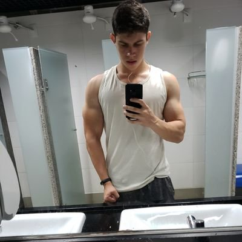

Fisiculturismo
O que é o fisiculturismo: Fisiculturismo é uma prática que visa o desenvolvimento dos músculos corporais a partir da hipertrofia muscular, ou seja, aumento no volume da massa muscular. O fisiculturismo não é considerado um esporte oficial, no entanto existem competições entre fisiculturistas, para saber quem possui o corpo com os músculos mais desenvolvidos. O fisiculturismo, como forma de competição, existe nos jogos Pan-Americanos e Asiáticos, no entanto ainda não foi incluído nos Jogos Olímpicos. Nas competições entre os fisiculturistas são analisadas principalmente a força, a proporção, o tamanho, a definição e a estética dos músculos. Um dos objetivos principais do fisiculturismo é a ausência de músculos subdesenvolvidos, ou seja, toda estrutura muscular do competidor deve estar no seu ápice de desenvolvimento. Um dos fisiculturistas mais conhecidos é o ator e ex-governador do estado americano da Califórnia Arnold Schwarzenegger. Em inglês, o termo "fisiculturismo" é traduzido para bodybuilding. Ver também o significado do Stanozolol Categorias de fisiculturismo Existem diversas categorias específicas para cada tipo de fisiculturista, seja masculino ou feminino. As categorias são definidas por faixas etárias, limites de peso e altura. Os competidores que se enquadram em grupos similares nestes três requisitos estão aptos para competir nesta categoria. Todas as categorias das competições de fisiculturismo são definidas pela Internacional Federation of Bodybuilding and Fitness – IFBB.
Fisiculturismo Clássico
-
Ronnie Coleman

Idade: 58 anos
-
Jay Cutler

Idade: 49 anos
-
Arnold

Idade: 75 anos
Fisiculturismo Moderno
-
chris bumstead
Idade: 27 anos
-
Ramon Dino

Idade: 27 anos
-
Urs Kalecinski
Idade: 24 anos
Atletas Tik Tok
-
Fabinho
Idade: 24 anos
-
James Junior
Idade: 21 anos
-
Thales
Idade: 22 anos